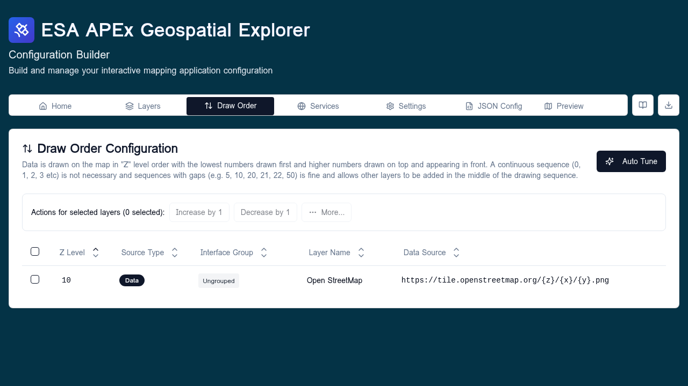

Draw order¶
The Draw order tab controls the front-to-back stacking of layers on the map. Each layer's position here is persisted as the layer's zIndex: rows higher in the list draw on top of rows below them.

When to use¶
Visit this tab when:
- A vector layer is being hidden by a raster overlay and needs to come forward.
- Two raster overlays draw in the wrong order regardless of toggle order.
- You need to deterministically pin certain layers (labels, boundaries) above the rest.
For day-to-day visibility, use the toggles in the Layers tab — draw order only affects stacking, not whether a layer is on or off.
Default Z-levels¶
When a data source is added to a layer, the builder assigns a default
zIndex based on the source's format and (for vector data) geometry
type. These defaults give a sensible stack out of the box: basemaps at the
bottom, raster overlays above them, and vector geometry on top with points
above lines above polygons.
| Category | Formats | Geometry | Default Z |
|---|---|---|---|
| Base raster | cog, wms, wmts, xyz |
— | 10 |
| Standard raster | cog, wms, wmts, xyz |
— | 50 |
| Vector polygon | geojson, flatgeobuf, wfs |
Polygon | 100 |
| Vector line | geojson, flatgeobuf, wfs |
Line | 110 |
| Vector point | geojson, flatgeobuf, wfs |
Point | 120 |
Higher numbers draw on top. The 10-unit gap between vector geometries and the 40-unit gap between raster categories leaves room to nudge individual layers without colliding with the next category.
Overriding and fine-tuning¶
The Draw Order tab lists every active layer (base layers excluded — they
always sit at the bottom). Drag a row up or down to override its default
position. The new order is persisted into each DataSourceItem.zIndex when
the config is saved.
Tips:
- The topmost row in the list is drawn last, so it appears on top.
- Vector layers usually belong above raster layers so points and lines stay visible.
- Labels and annotation layers are typically pinned to the very top.
- Reordering here does not change the order layers appear inside the Layers tab — that is controlled by interface groups and within-group order.
- Small manual nudges within a category are fine; if the whole stack drifts away from the defaults, use Auto Tune to reset it.
Auto Tune¶
The Auto Tune action resets every layer's zIndex to the default for
its format and geometry type, using the table above. It is the quickest way
to recover a clean baseline when a config has been edited heavily and the
draw order has become inconsistent.
When you click Auto Tune, a preview dialog shows:
- A summary of how many layers fall into each category.
- A per-layer table with the current
Znext to the proposedZ, with rows that will change highlighted. - A toggle to show only the layers that will change.
Nothing is applied until you confirm. Use Auto Tune when:
- A freshly imported or migrated config has missing or arbitrary
zIndexvalues. - Vector layers are being hidden under raster overlays across the board.
- You want to start from a known-good baseline before making targeted manual nudges.
If you have intentional, hand-tuned overrides you want to keep, review the preview carefully — Auto Tune will overwrite those overrides for any layer it touches.
Validation¶
- Every layer ends up with a
zIndex; the editor renumbers as needed on save. - Hidden layers still occupy a position; toggling them on later uses the saved order.
Related¶
- Interface groups — controls Layers-tab grouping, not draw order.
- Layers overview